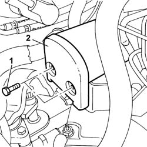
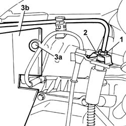
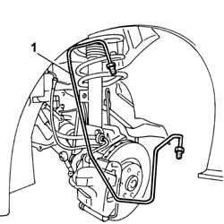

3340B55 CENTRAL BRAKE PIPE TO LH - R R
- Path
- Procedures > 33 BRAKES > 3340 ANTI-LOCK BRAKE SYSTEM (ABS) > 3340B ABS SYSTEM PIPES > 3340B55 CENTRAL BRAKE PIPE TO LH - R R
- Kind
- repair procedure (removal / refitting; the operation number is the code)
- Applies to
- all engines; all production periods
- Interactive page
- https://sloeber94.github.io/elrnDB-fUlss/en/#/179007329
Applies to: all engines; all production periods
 Removing
Removing
 Refitting
RefittingOp. 5530B56 BATTERY DRIP TRAY COVER - R.R.
- Disconnect the negative battery terminal.
- Position the vehicle on a lift.
Op. 5010B18 CLIMATE CONTROL UNIT AIR INTAKE - R.R.
Op. 1048A10 AIR CLEANER FILTERING ELEMENT - REPLACE
1. Unscrew the connector on the electrohyraulic control unit
- Collect the coolant in a suitable container.

Applies to: all engines; all production periods
Op. 4450B02 LEFT FRONT WHEEL R R
1. Unscrew the connector on the hose.
2. Recover the clip.
3. Remove stud (3a) securing the supplementary wheel arch (3b).

Applies to: all engines; all production periods
1. Release the rigid pipe from electrohydraulic control unit to brake caliper from the fastenings and remove.

Applies to: all engines; all production periods
Refitting
Removing- Fit the rigid pipe from electrohydraulic control unit to brake caliper and secure with fastenings.
- Fit the clip.
- Tighten the connector on the hose to the specified torque.
 | Value - daNm | Fastening | Component | Ø |
|---|---|---|---|---|
. | (Connector on hose to brake caliper) 1.5 | Connector | PIPE RIGID FRONT BRAKE PIPE/ABS CONTROL UNIT | - |
Op. 4450B02 LEFT FRONT WHEEL R R
- Fit the supplementary wheel arch and secure with the retaining stud.
- Tighten the connector on the electrohydraulic control unit to the specified torque.
| Value - daNm | Fastening | Component | Ø |
|---|---|---|---|---|
. | (Connector on electrohydraulic control unit) 2.5 | Connector | PIPE RIGID FRONT BRAKE PIPE/ABS CONTROL UNIT | - |
Op. 1048A10 AIR CLEANER FILTERING ELEMENT - REPLACE
Op. 5010B18 CLIMATE CONTROL UNIT AIR INTAKE - R.R.
Op. 0010T65 HYDRAULIC BRAKE SYSTEM BLEED AIR
Op. 0010T66 MANUAL GEARBOX OIL CHECK LEVEL AND TOP UP IF NECESSARY
- Remove the vehicle from the lift.
- Connect the negative battery terminal.
Op. 5530B56 BATTERY DRIP TRAY COVER - R.R.
- Test the operation of the braking system.